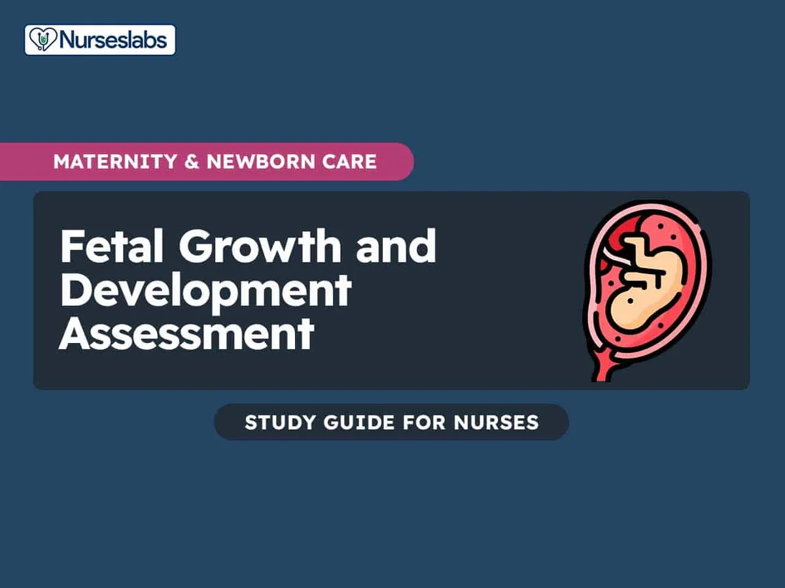

Expanded Nursing Uganda Explanation
Fetal scalp and should be reviewed through safe maternal and newborn assessment, early recognition of danger signs, respectful communication and timely referral. Connect the definition to vital signs, bleeding, fetal or newborn wellbeing, patient education and local protocol requirements.
01 FETAL SCALP TISSUE
This is a soft outer covering of the fetal skull.
Structure of the Scalp Tissue
Consists of five layers.
The mnemonic ‘ SCALP ’ can be a useful way to remember the layers of the scalp: S kin, Dense C onnective Tissue, Epicranial A poneurosis, L oose Areolar Connective Tissue and P eriosteum.
1. SKIN : It is the outer covering and contains hair. contains numerous hair follicles and sebaceous glands (thus a common site for sebaceous cysts).
- It’s thicker than skin on most other parts of the body, densely populated with hair follicles, sebaceous (oil) glands, and sweat glands.
- The abundance of sebaceous glands makes the scalp prone to sebaceous cysts.
- The skin’s rich blood supply contributes to its rapid healing capabilities but also makes it susceptible to significant blood loss during trauma.
2. DENSE CONNECTIVE TISSUE (SUPERFICIAL FASCIA) : This is the subcutaneous layer made of fibrous fat tissue. This layer, immediately beneath the skin, is composed of dense fibrous connective tissue interwoven with fat.
- This layer is highly vascular, containing numerous blood vessels that nourish the hair follicles and the scalp itself.
- Its fibrous nature makes it strong and resilient but also contributes to the difficulty of separating it from the underlying layers.
- In prolonged or difficult labor, it can become edematous (swollen) and accumulate fluid, resulting in a caput succedaneum, a soft, fluctuant swelling that typically resolves without intervention.
3. EPICRANIAL APONEUROSIS OR MUSCLE LAYER(GALEA APONEUROTICA) : A thin, tendon-like structure that connects the occipitalis and frontalis muscles. It is a layer of tendon covering the vertex.
- It connects the frontalis muscle of the sinciput and the occipitalis muscle of the occiput. This is known as the tendon of Galea.
- The aponeurosis plays a crucial role in scalp mobility and protects the underlying tissues from excessive movement. It firmly adheres to the underlying layers and its strong composition prevents widespread injury.
4. LOOSE AREOLAR CONNECTIVE TISSUE (SUBAPONEUROTIC LAYER) : This is the layer of loose connective tissue covering the areola which permits limited movements of the scalp to occur over the skull.
- A thin connective tissue layer that separates the periosteum of the skull from the epicranial aponeurosis.
- This allows for the scalp’s considerable mobility over the skull, an important protective mechanism against trauma.
5. PERIOSTEUM : The periosteum is the thin, fibrous membrane that tightly adheres to the outer surface of the cranial bones.
- This covers the outer surface of the bone and it envelops each bone separately.
- It is a vascular layer supplying the cranial bone with blood.
- Because it is tightly adherent to the skull, it resists separation, unlike the subaponeurotic layer.
- During difficult births, where some forces are applied to the fetal head, rupture of the blood vessels in this layer can cause a cephalohematoma, a collection of blood that is confined to the region of one or more bones.
- Unlike caput succedaneum, a cephalohematoma is confined by the sutures of the skull.
Blood Supply, Lymphatic Drainage, and Innervation:
The scalp receives blood supply primarily from the external and internal carotid arteries.
Lymphatic drainage from the scalp is intricate and occurs in multiple regions with connections to pre-auricular and posterior auricular lymph nodes.
Innervation of the scalp, comes from various cranial nerves:
- Greater occipital nerve : supplies the posterior vertex
- Lesser occipital nerve : supplies the posterior scalp near the ear
- Auriculotemporal nerve : supplies the temporal region and part of the mandible
- Supraorbital nerve : supplies the forehead above the orbit
- Supratrochlear nerve : supplies the medial forehead
- Zygomatic temporal nerve: supplies the lateral temporal region
02 BIRTH INJURIES INVOLVING THE SCALP
Caput succedaneum is an oedematous swelling on the subcutaneous layer of the scalp of the fetal skull . It is a swelling which contains serum.
Caput succedaneum is a collection of serum (fluid) that causes a soft, edematous (swollen) area on the baby’s scalp . It’s located in the subcutaneous layer (beneath the skin).
Causes of Caput Succedaneum
Pressure from the cervix (the lower part of the uterus) during labor causes slowed blood flow and fluid buildup in the scalp. This is especially likely if the membranes (bag of waters) have ruptured early and are not protecting the fetal head.
- It is due to pressure of the dilating cervix to the girdle of contact following early rupture of membranes. Since the fore water is not there to take away the pressure of the dilating cervix off the fetal head.
- The pressure of the dilating cervix causes various blood supply retardation and the area lying over the internal os becomes congested and oedematous.
- The size of the swelling depends on the degree of cervical dilatation.
Predisposing Factors of Caput Succedaneum
Any condition causing early rupture of membranes during labour e.g.
- Mal presentations like breech presentations and transverse lie.
- Mal positions like occipital posterior position, face brow.
- In vacuum extraction when the vacuum extractor cup causes pressure on the scalp. Incases where a vacuum extractor was used, the swelling is called a Chignon .
Characteristics of a caput succedaneum
This swelling develops during labour therefore it may be felt on vaginal examination.
- Develops during labor; it may be noticeable during vaginal exams.
- Present at birth.
- Can cross the suture lines (the joints between the baby’s skull bones), unlike cephalohematoma which is confined by these sutures.
- Usually gets smaller over time.
- Leaves an indentation when pressed (because of the fluid).
- Typically disappears within 24-36 hours. This is a key differentiator between caput succedaneum and cephalohematoma.
- More common than cephalohematoma.
- Contains serum (fluid), not blood.
Management of Caput Succedaneum
- The HCW must reassure the mother and tell her that this is a temporary condition.
- No treatment is needed unless the caput is excessive in size.
- No local treatment should be applied.
- Injection vitamin k 1mg can be administered especially when mother went through difficult labour and the baby is cot nursed for at least 24 hours depending on the severity of the condition.
- The baby is observed carefully for signs of cerebral irritation.
A cephalohematoma is a swelling on the fetal skull due to the effusion (collection) of blood under the Periosteum (pericranium) covering the bone of the fetal skull.
A cephalohematoma is a collection of blood (hematoma) that forms between the periosteum and the skull bone . Slight separation of the periosteum from the bone allows blood to accumulate. Unlike caput succedaneum, it is contained by the sutures of the skull and does not cross suture lines. ****
Causes Of Cephalohematoma
- Friction between the fetal skull and the mother’s pelvis during delivery.
- Cephalopelvic disproportion (baby’s head is too large for the birth canal).
- Precipitous labour (very rapid labour).
- Persistent posterior position of the baby’s head (occiput posterior).
- Excessive moulding of the fetal head (the skull bones overlap during labour). These factors cause tearing of the periosteum, leading to bleeding.
All the above conditions cause tearing of the Periosteum from the bone leading to bleeding.
Characteristics of Cephalohematoma
- Unlike caput succedaneum, it is not present at birth; it typically appears within 12-24 hours after delivery.
- It does not cross suture lines because the periosteum is attached along the suture lines. This is a key difference from caput succedaneum. It can, however, be bilateral (on both sides of the head).
- It tends to increase in size over several days and can persist for weeks (at least 6 weeks, or longer).
- Does not indent/pit with pressure (unlike the edematous caput succedaneum).
- Usually resolves spontaneously through reabsorption.
Management and Treatment of Cephalohematoma
- Observation : Usually, no specific treatment is required, provided the cephalohematoma is not increasing in size rapidly or causing other issues. Close observation is key.
- Vitamin K : In some cases, a Vitamin K injection (1mg) may be administered to a full-term infant to improve blood clotting. This is especially pertinent in the event of difficult labor or clinical concern about blood clotting. The clinical circumstances determine this decision, and is not uniformly recommended.
- Hemoglobin Levels : The infant’s hemoglobin levels should be monitored; if anemia is present, hematinics (iron supplements or other blood-building medications) may be prescribed.
- Blood Transfusion : In cases of severe anemia, a blood transfusion might be necessary.
- Reassurance : Parents should be reassured that this is usually a benign condition that resolves on its own. They should be instructed not to puncture the swelling.
Rare Complications:
Although rare, potential complications include:
- Meningitis (infection of the brain and spinal cord membranes) – This would be secondary to another infection and is not directly caused by the cephalohematoma itself.
- Neonatal tetanus (rare, only if the swelling is broken, allowing infection)
- Anemia (low red blood cell count)
Note: Care should be taken not to injure the Scalp features because they can bleed profusely since they are well supplied with blood.
Importance of the knowledge of the fetal skull During Pregnancy
- It is an easily recognized part of the fetus so the midwife being aware of the size and shape locates it and builds up her concept of the fetus as a whole.
- Size compared with the height of fundus. The fetal skull helps the midwife to assess the period of gestation.
- The fetal skull is used to assess the rate of growth, normal or small for dates.
- The presentation is identified by the fetal head. In cephalic presentation, it is found over the pelvis in the lower pole of the uterus. In Breech presentation, it’s found in the fundus.
During Labour
- The knowledge of the fetal skull gives midwife indication to the outcome of labour.
- The level of descent is estimated on abdominal palpation in order to assess the progress of labour.
Vaginal examination
- The level of the presenting part is compared to the ischial spine. If the head is above the ischial spines, it is not yet engaged. If the head is at the level of the ischial spine, it is engaged and the outcome is good.
- In the flexed head the occiput will be found lower than the same level with a flexed head the occiput will be at the ischial pines.
- What is scalp tissue?
- List five layers of the scalp tissue from inside out.
- State two common injuries of the scalp tissue.
- Give four characteristics of a caput succedaneum.
- Explain two causes of a cephalohematoma.
- Outline eight differences between a caput succedaneum and a Cephalohematoma.
03 THE ANATOMY OF THE INTERNAL STRUCTURES OF THE FETAL SKULL
Nervous system : It is a network of nerve cells and fibres which transmits nerve impulses between parts of the body. It is a central processing unit of the body and also controls and balances the body functions.
Divisions
- Central Nervous System (CNS) : Comprises the brain and spinal cord, the primary control centers.
- Peripheral Nervous System (PNS) : Consists of nerves that extend from the CNS to all parts of the body, relaying information to and from the CNS.
- Autonomic Nervous System (ANS) : A part of the PNS that regulates involuntary functions like heart rate, digestion, and breathing. It further subdivides into the sympathetic (fight-or-flight) and parasympathetic (rest-and-digest) systems.
Internal Structures of the Fetal Skull
The fetal skull houses the;
- developing brain,
- its protective coverings (meninges),
- fluid-filled spaces (ventricles), and
- the blood vessels that supply it.
A. THE BRAIN :
The brain, the largest part of the CNS, resides within the cranial cavity. It is divided into three main parts: Cerebrum (fore head), Cerebellum (hindbrain) and Brain stem consists of the midbrain, pons varolii and medulla oblongata.
Cerebrum : The largest part, filling most of the cranial vault. It is divided into two hemispheres (right and left), each controlling the opposite side of the body. Each hemisphere is further subdivided into lobes:
- Frontal Lobe : Responsible for higher-level cognitive functions like planning, decision-making, and voluntary movement.
- Parietal Lobe : Processes sensory information (touch, temperature, pain).
- Temporal Lobe : Involved in auditory processing, memory, and language comprehension.
- Occipital Lobe : Processes visual information.
The surface of the cerebrum is highly folded, increasing its surface area. The folds are called gyri , and the grooves separating them are called sulci . The outer layer is gray matter (neuronal cell bodies), while the inner layer is white matter (axons).
Cerebral Functions
- The cerebrum is the center for higher mental functions such as intellect, memory, willpower, imagination, emotions, and reasoning. It receives and interprets sensory stimuli, initiates voluntary movements, and controls other parts of the nervous system.
- Receive and perceive the stimuli i.e. It contains sensory centres which give sensitivity to the skin, muscles, bones and joints.
- It contains centres for special senses e.g. sight, hearing, smell, taste and touch.
- To give command for reaction with the help of past experience.
- To control other parts of the nervous system.
Cerebellum : Located beneath the cerebrum, the cerebellum is smaller but crucial for coordination and balance.
- It has two hemispheres and consists of an outer layer of gray matter and an inner layer of white matter.
- Situated below and behind the cerebrum.
- It is the hindbrain.
- It is smaller than the cerebrum.
- It consists of the grey matter on the outside and white matter inside due to axons.
Functions of cerebellum
- The cerebellum coordinates muscle movements, maintains posture and balance, and contributes to smooth, precise motor control.
- Controls muscle tone and maintains equilibrium. (Helps balancing the body)
- Helps coordination of body movements.
- Damage to the cerebellum leads to ataxia (loss of coordination), causing clumsy movements and impaired balance.
Clinical note
- Destruction of the cerebellum by disease results in loss of power to coordinate muscular activity therefore the movements are exaggerated and awkward e.g. a full cup cannot be lifted to drink without spilling the fluid, patient cannot walk or stand steadily but staggers and moves like a drunkard man.
Brainstem : It is comparatively very small and occupies the back lower part of the cranial cavity.
Connects the cerebrum and cerebellum to the spinal cord. It consists of:
- Midbrain : It is found under the cerebrum. It contains nerve fibres that connect the cerebrum with the lower parts of the brain and the spinal cord. Relays signals between the cerebrum and lower brain centers.
- Pons : It is the central part of the CNS just above the spinal cord. A relay center for signals between the cerebrum, cerebellum, and medulla oblongata; also involved in regulating breathing. Also plays part in control of consciousness, control level of concentration.
- Medulla Oblongata : Extends from the pons and is continuous with the spinal cord. Controls vital functions such as breathing, heart rate, and blood pressure. It contains vital centers whose damage can lead to immediate death. Reflex centers for swallowing, vomiting, coughing, and sneezing are also located here. Any injury to it causes instant death.
General Functions of Nervous system
- Control over voluntary and involuntary functions / actions.
- To control body movements, respiration, circulation, digestion, hormone secretion, body temperature.
- To receive stimuli from sense organs, perceive them and respond accordingly.
- Higher mental functions like memory, receptivity, perception & thinking.
B. THE CEREBRAL MEMBRANES/MENINGES
The brain and the spinal cord are covered by three membranes arranged from out inward, these cover and protect the brain. They are; Dura (outer), Arachnoid matter (middle) and Pia matter (inner).
- Dura Mater : The outermost, thickest, and toughest layer. It has two layers: the periosteal layer (attached to the skull) and the meningeal layer (covering the brain). Extensions of the dura mater, the falx cerebri (separates the cerebral hemispheres) and the tentorium cerebri (separates the cerebrum from the cerebellum), further protect the brain.
- Arachnoid Mater : A delicate, web-like middle layer. The subarachnoid space, between the arachnoid and pia mater, contains cerebrospinal fluid (CSF).
- Pia Mater : The innermost, thin, and highly vascular layer adhering directly to the brain’s surface, providing it with blood supply.
C. THE VENTRICLES
The brain contains four interconnected cavities, the ventricles, filled with CSF. The CSF cushions and protects the brain and spinal cord. CSF is produced in the ventricles and circulates throughout the subarachnoid space.
The brain is not solid but contains four cavities known as ventricles.
- There are two lateral ventricles on either hemispheres of the cerebrum.
- The third lies in the midline of the cerebrum, the fourth is between the pons, medulla oblongata and cerebellum.
- These ventricles communicate with one another and contain the cerebral spinal fluid.
- This fluid is secreted in the four chambers and they have openings where the cerebrospinal fluid flows from one ventricle to the other. It flows into the subarachnoid space and the straight canal of the spinal cord through the opening of the fourth ventricle.
04 THE CEREBRAL SPINAL FLUID
CSF is a clear, colorless fluid that circulates within the ventricles of the brain , the subarachnoid space (between the arachnoid and pia mater), and the central canal of the spinal cord . In adults, the total volume is approximately 130-150 mL, and it is continuously produced and reabsorbed. Its specific gravity is 1.004-1.008.
Composition of CSF:
CSF is primarily composed of water, but also contains glucose, proteins, electrolytes (sodium, potassium, chloride, calcium, magnesium), amino acids, and a small number of cells (mostly lymphocytes). Its composition closely reflects the plasma, but with significant differences in protein and cell content.
Production and flow of CSF
CSF is primarily produced by the choroid plexus , a network of specialized capillaries and ependymal cells lining the ventricles . The choroid plexus actively secretes CSF through a process involving ion transport and filtration .
The flow of CSF is as follows:
- Lateral Ventricles : CSF is produced in the lateral ventricles (two), the largest ventricles.
- Interventricular Foramina ( Foramina of Monro ): CSF flows from the lateral ventricles through the interventricular foramina into the third ventricle.
- Cerebral Aqueduct ( Aqueduct of Sylvius ): CSF passes through the narrow cerebral aqueduct, located in the midbrain, into the fourth ventricle.
- Fourth Ventricle : CSF flows from the fourth ventricle through three openings: the median aperture (foramen of Magendie) and two lateral apertures (foramina of Luschka).
- Subarachnoid Space : CSF enters the subarachnoid space, surrounding the brain and spinal cord.
- Arachnoid Granulations ( Villi ): CSF is reabsorbed into the venous system via arachnoid granulations, small protrusions of the arachnoid mater that extend into the superior sagittal sinus (a major intracranial venous channel).
Clinical Significance – Hydrocephalus:
Blockage of CSF flow at any point in the circulation can lead to hydrocephalus , a condition characterized by an accumulation of CSF within the ventricles and/or subarachnoid space, causing increased intracranial pressure.
- Congenital Hydrocephalus : Results from developmental anomalies affecting the ventricles or their outflow pathways.
- Acquired Hydrocephalus: Can be caused by various factors including tumors, infections (meningitis, encephalitis), head trauma, and hemorrhage.
- Communicating Hydrocephalus: Obstruction occurs after the CSF leaves the ventricular system. The problem lies in the impaired absorption of CSF through the arachnoid granulations.
- Non-Communicating ( Obstructive ) Hydrocephalus : Obstruction occurs within the ventricular system, often at the level of the foramina of Monro, cerebral aqueduct, or foramina of Luschka and Magendie.
Functions of CSF:
- Buoyancy and Protection : CSF reduces the effective weight of the brain, preventing it from being crushed by its own weight. It also acts as a shock absorber, protecting the brain and spinal cord from trauma.
- Homeostasis : CSF helps maintain a stable chemical environment for the brain and spinal cord by regulating the extracellular fluid composition.
- Nutrient Transport : CSF transports nutrients and removes metabolic waste products from the brain.
- Excretion : CSF assists in the removal of waste products from the brain.
05 SPINAL CORD
The spinal cord is a long, cylindrical structure extending from the medulla oblongata to the level of the first or second lumbar vertebra (L1-L2 ). It is approximately 45 cm long in adults and is encased within the vertebral canal of the spine. 31 pairs of spinal nerves branch off from the spinal cord.
Functions of spinal cord
- Sensory Transmission : Carries sensory information from the body to the brain.
- Motor Transmission : Transmits motor commands from the brain to the muscles and glands.
- Reflex Actions : Mediates reflex actions (involuntary responses to stimuli), allowing rapid responses without the involvement of the brain.
Intracranial Blood Sinuses
It is important to note that the draining territories of intracranial veins are different from those of arterial territories of the major cerebral arteries.
Intracranial venous sinuses are channels located within the dura mater. Unlike other veins in the body they run alone and not parallel to arteries, they lack valves and have rigid walls. Their drainage patterns differ significantly from those of the cerebral arteries. They ultimately drain blood into the internal jugular veins.
The key sinuses include:
- Superior Sagittal Sinus : Runs along the superior border of the falx cerebri, from the crista galli to the internal occipital protuberance. It receives superior cerebral veins and veins from the pericranium (outer layer of the scalp).
- Inferior Sagittal Sinus: Runs along the inferior border of the falx cerebri.
- Straight Sinus : Formed at the junction of the inferior sagittal sinus and the great cerebral vein of Galen.
- Great Cerebral Vein of Galen : A large vein draining the deep structures of the brain.
- Transverse Sinuses : Two sinuses running horizontally across the posterior cranial fossa, along the line of attachment of the tentorium cerebri to the occipital bone.
- Sigmoid Sinuses : Continuations of the transverse sinuses that descend into the neck as the internal jugular veins.
- Explain the features of the cerebrum.
- Outline the features of the cerebellum.
- Describe the Mid brain.
- Outline three functions of the cerebellum.
- Explain five functions of the cerebrum.
- State two functions of the medulla oblongata.
- Outline five cerebral sinuses.
- With the use of a table, explain the situation and functions of;
- I. Meninges.
- ii. Cerebral ventricles.
- iii. Cerebral spinal fluid.
- State two contents of the cerebral spinal fluid.
- List four lobes of the brain.
- List two functions of the pons varolli.
06 Nursing Uganda Clinical Lens
Use Fetal scalp and as a practical nursing topic, not only a memorized definition. Read the topic through the safety of two patients: the mother and the fetus or newborn.
- What to understand first: define fetal scalp and, identify the normal or expected pattern, then explain what changes when the patient is unwell.
- Why it matters in care: the nurse must recognize risk early, explain findings clearly, document accurately and know when to escalate.
- How to revise it: connect each point to assessment, nursing diagnosis or care problem, intervention, rationale and evaluation.
07 Assessment Guide
- Maternal vital signs, bleeding, pain, contractions, uterine tone and danger signs.
- Fetal or newborn wellbeing, feeding, temperature, breathing and activity.
- History of pregnancy, parity, medications, allergies, investigations and referral risks.
08 Nursing Priorities, Rationales and Outcomes
- Recognize danger signs early and escalate without delay.
- Provide respectful communication, privacy, infection prevention and clear documentation.
- Teach the mother what to monitor at home and when to return urgently.
The rationale for these priorities is patient safety: nursing actions should prevent deterioration, reduce discomfort, support recovery and create clear evidence for the next caregiver.
- Expected outcome: Mother and baby remain stable, danger signs are acted on early, and the family understands follow-up instructions.
09 Patient Teaching and Revision Check
- Explain fetal scalp and in simple language the patient or caregiver can repeat back.
- Teach warning signs, medicine or follow-up instructions, hygiene or lifestyle points where relevant.
- For exams, prepare a short answer using: definition, causes or risk factors, signs, assessment, management, complications and prevention.
- For ward practice, document baseline findings, actions taken, patient response and the plan for review.
Illustrations and Diagrams (1)

Related Video Lectures
Watch nursing lecture videos on YouTube for this topic. Opens in a new tab.
Watch on YouTubeExternal link: YouTube may use its own cookies and terms. Nursing Uganda is not affiliated with YouTube.